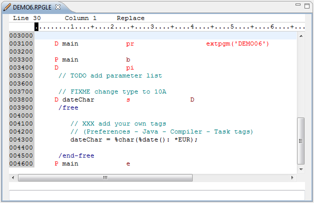
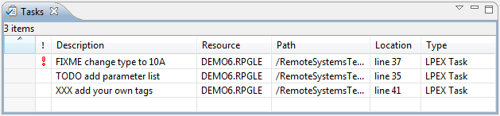
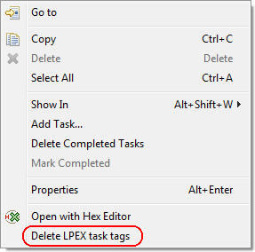
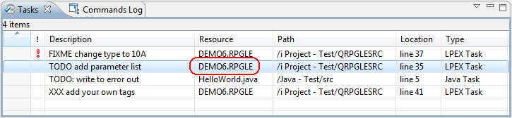

| RPG: | C* TODO Change to /free |
| RPGLE: | // TODO Enhance comments |
| CLP: | /* FIXME Add error handler */ |
The LPEX task tags subproject introduces task tags to the IBM LPEX editor. In order to keep complexity and confusion low, the project shares the Java Task Tags preferences page to maintain the tags. But it also has its own preferences page to specify the source types that are enabled for task tags.
The following example demonstrates the use of task tags in a RPG source member. The RPG editor with a sample source if shown at the top followed by the Eclipse 'General -> Tasks' view.


From the Tasks view you can easily open the associated source member by double-clicking on the task in question.
For that you can select option Delete LPEX task tags from the context menu of the Tasks view:

That removes all tasks of the selected resource and not only the selected one. For example all three tasks of DEMO6 are removed when Delete LPEX task tags is selected for the item with the red rectangle.
